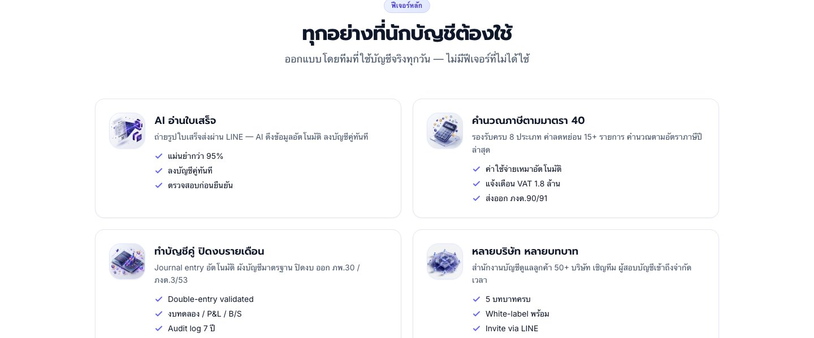

01
AI Receipt OCR
ถ่ายรูปใบเสร็จ AI อ่านและลงบัญชีให้
ส่งรูปบิลเข้าแชต LINE ระบบดึงยอด วันที่ และเลขผู้เสียภาษีออกมาให้อัตโนมัติ แล้วสร้าง journal entry แบบบัญชีคู่ทันที — ตรวจทานก่อนกดยืนยันได้ทุกครั้ง

- ดึงยอด วันที่ เลขผู้เสียภาษี
- ลงบัญชีคู่ทันทีหลังยืนยัน
- ตรวจทานก่อนบันทึกได้เสมอ